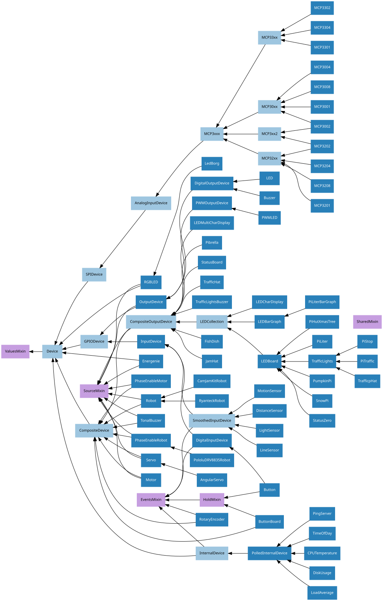

19. API - Generic Classes
The GPIO Zero class hierarchy is quite extensive. It contains several base classes (most of which are documented in their corresponding chapters):
Deviceis the root of the hierarchy, implementing base functionality likeclose()and context manager handlers.GPIODevicerepresents individual devices that attach to a single GPIO pinSPIDevicerepresents devices that communicate over an SPI interface (implemented as four GPIO pins)InternalDevicerepresents devices that are entirely internal to the Pi (usually operating system related services)CompositeDevicerepresents devices composed of multiple other devices like HATs
There are also several mixin classes for adding important functionality at numerous points in the hierarchy, which is illustrated below (mixin classes are represented in purple, while abstract classes are shaded lighter):

19.1. Device
- class gpiozero.Device(*args, **kwargs)[source]
Represents a single device of any type; GPIO-based, SPI-based, I2C-based, etc. This is the base class of the device hierarchy. It defines the basic services applicable to all devices (specifically the
is_activeproperty, thevalueproperty, and theclose()method).- pin_factory
This attribute exists at both a class level (representing the default pin factory used to construct devices when no pin_factory parameter is specified), and at an instance level (representing the pin factory that the device was constructed with).
The pin factory provides various facilities to the device including allocating pins, providing low level interfaces (e.g. SPI), and clock facilities (querying and calculating elapsed times).
- close()
Shut down the device and release all associated resources (such as GPIO pins).
This method is idempotent (can be called on an already closed device without any side-effects). It is primarily intended for interactive use at the command line. It disables the device and releases its pin(s) for use by another device.
You can attempt to do this simply by deleting an object, but unless you’ve cleaned up all references to the object this may not work (even if you’ve cleaned up all references, there’s still no guarantee the garbage collector will actually delete the object at that point). By contrast, the close method provides a means of ensuring that the object is shut down.
For example, if you have a breadboard with a buzzer connected to pin 16, but then wish to attach an LED instead:
>>> from gpiozero import * >>> bz = Buzzer(16) >>> bz.on() >>> bz.off() >>> bz.close() >>> led = LED(16) >>> led.blink()
Devicedescendents can also be used as context managers using thewithstatement. For example:>>> from gpiozero import * >>> with Buzzer(16) as bz: ... bz.on() ... >>> with LED(16) as led: ... led.on() ...
- property closed
Returns
Trueif the device is closed (see theclose()method). Once a device is closed you can no longer use any other methods or properties to control or query the device.
- property is_active
Returns
Trueif the device is currently active andFalseotherwise. This property is usually derived fromvalue. Unlikevalue, this is always a boolean.
- property value
Returns a value representing the device’s state. Frequently, this is a boolean value, or a number between 0 and 1 but some devices use larger ranges (e.g. -1 to +1) and composite devices usually use tuples to return the states of all their subordinate components.
19.2. ValuesMixin
- class gpiozero.ValuesMixin(...)[source]
Adds a
valuesproperty to the class which returns an infinite generator of readings from thevalueproperty. There is rarely a need to use this mixin directly as all base classes in GPIO Zero include it.Note
Use this mixin first in the parent class list.
- property values
An infinite iterator of values read from
value.
19.3. SourceMixin
- class gpiozero.SourceMixin(...)[source]
Adds a
sourceproperty to the class which, given an iterable or aValuesMixindescendent, setsvalueto each member of that iterable until it is exhausted. This mixin is generally included in novel output devices to allow their state to be driven from another device.Note
Use this mixin first in the parent class list.
- property source
The iterable to use as a source of values for
value.
19.5. EventsMixin
- class gpiozero.EventsMixin(...)[source]
Adds edge-detected
when_activated()andwhen_deactivated()events to a device based on changes to theis_activeproperty common to all devices. Also addswait_for_active()andwait_for_inactive()methods for level-waiting.Note
Note that this mixin provides no means of actually firing its events; call
_fire_events()in sub-classes when device state changes to trigger the events. This should also be called once at the end of initialization to set initial states.- wait_for_active(timeout=None)[source]
Pause the script until the device is activated, or the timeout is reached.
- wait_for_inactive(timeout=None)[source]
Pause the script until the device is deactivated, or the timeout is reached.
- property active_time
The length of time (in seconds) that the device has been active for. When the device is inactive, this is
None.
- property inactive_time
The length of time (in seconds) that the device has been inactive for. When the device is active, this is
None.
- when_activated
The function to run when the device changes state from inactive to active.
This can be set to a function which accepts no (mandatory) parameters, or a Python function which accepts a single mandatory parameter (with as many optional parameters as you like). If the function accepts a single mandatory parameter, the device that activated it will be passed as that parameter.
Set this property to
None(the default) to disable the event.
- when_deactivated
The function to run when the device changes state from active to inactive.
This can be set to a function which accepts no (mandatory) parameters, or a Python function which accepts a single mandatory parameter (with as many optional parameters as you like). If the function accepts a single mandatory parameter, the device that deactivated it will be passed as that parameter.
Set this property to
None(the default) to disable the event.
19.6. HoldMixin
- class gpiozero.HoldMixin(...)[source]
Extends
EventsMixinto add thewhen_heldevent and the machinery to fire that event repeatedly (whenhold_repeatisTrue) at internals defined byhold_time.- property held_time
The length of time (in seconds) that the device has been held for. This is counted from the first execution of the
when_heldevent rather than when the device activated, in contrast toactive_time. If the device is not currently held, this isNone.
- property hold_repeat
If
True,when_heldwill be executed repeatedly withhold_timeseconds between each invocation.
- property hold_time
The length of time (in seconds) to wait after the device is activated, until executing the
when_heldhandler. Ifhold_repeatis True, this is also the length of time between invocations ofwhen_held.
- when_held
The function to run when the device has remained active for
hold_timeseconds.This can be set to a function which accepts no (mandatory) parameters, or a Python function which accepts a single mandatory parameter (with as many optional parameters as you like). If the function accepts a single mandatory parameter, the device that activated will be passed as that parameter.
Set this property to
None(the default) to disable the event.